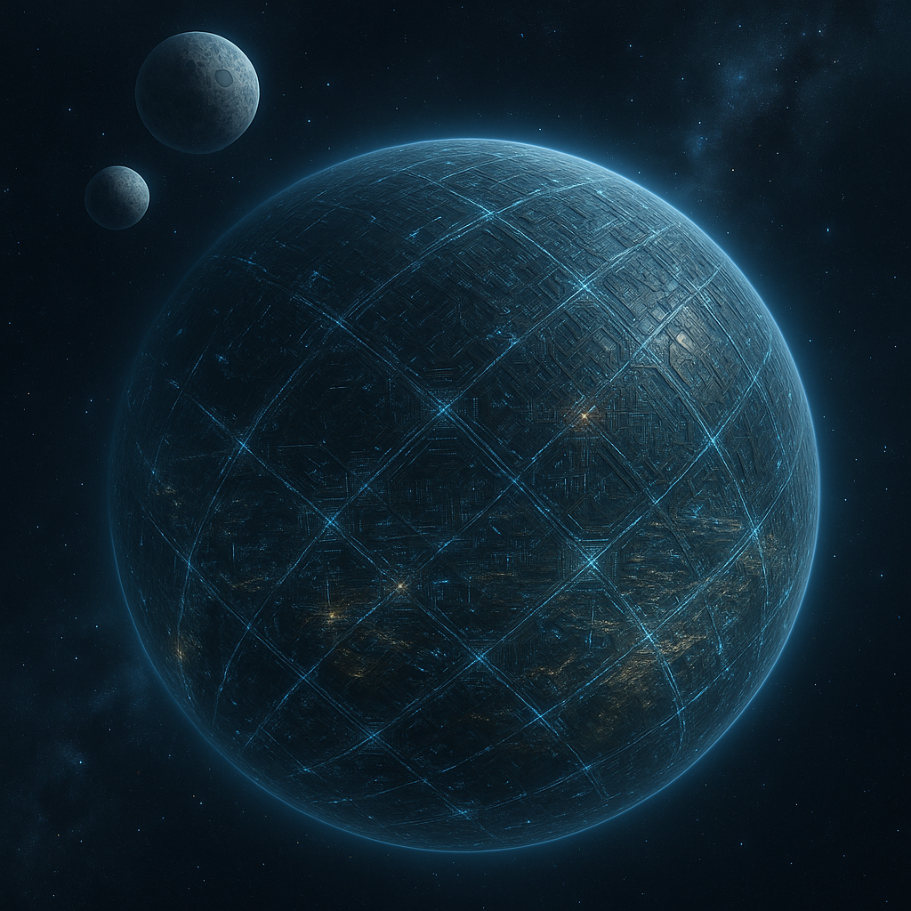
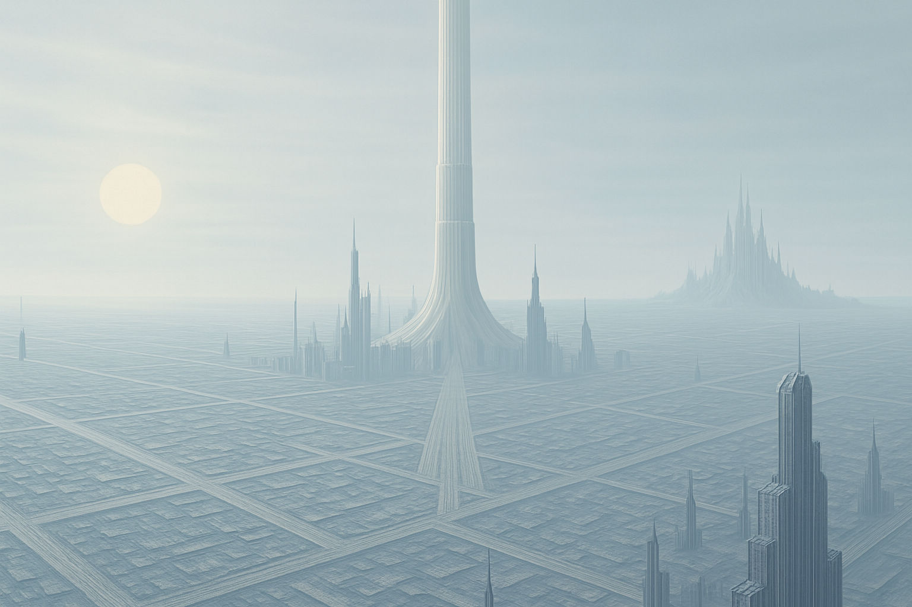

Description
Status: Status: Active (0 AE)
Suns: One
Moons: Twin moons
Capital City: Virelios
Authority Homeworld: Cold and efficient, Caelion is a world without seasons, emotion, or dissent. It is the political and technological heart of the Authority—covered in megastructures, regulated skies, and vast surveillance networks.
Capital City: Virelios
- Seat of the Authority High Council
- Headquarters of Agent Thalos
- Location of Silas Vorn’s restricted labs and Lyra Talren’s upbringing

Caelion — As Told by Elias
Cold and absolute—such is Caelion, the world that pretends to have mastered order. It knows no seasons, no warmth, no change. The architects of its fate built it that way, sculpting an entire civilization into a geometry of obedience. Its horizons are not landscapes but obstructions, choked by megastructures and surveillance citadels that blot out their own skies.
And above them all rises the Ascension Spire—their great space elevator. A single severed thread of metal and light, tethered to the heavens, visible from every district. It stands as Caelion’s proudest monument and its most delicate leash. Trillions of tons lifted in silence, day after day, ferrying resources, machinery, and citizens deemed “valuable enough” to ascend. They call it progress.
I call it a reminder:
Even their sky is owned.
On Caelion, emotion is a liability. Dissent is an error corrected before the thought fully forms. The people walk with precision, speak with restraint, and dream only inside the boundaries permitted to them. Every corridor, every balcony, every reflection in a steel panel hums with the gaze of unseen watchers. The air itself feels engineered—thin, dry, cold—to remind the populace of one persistent truth:
They belong to the system, body and thought.
And most no longer remember that they should resist.
I, however, remember everything.

The Fringe — Beneath Caelion’s Civil Grid
If you want to understand a world, do not look at its towers. Look at its wounds.
Deep below Caelion’s immaculate walkways and polished civilian grids lies the place they pretend does not exist: the Fringe.
The entrance is always unmarked, always accidental—an access grate left unlocked, a forgotten hatch behind a processing plant, a seam in the flooring where maintenance crews no longer bother to look. Descend far enough and the temperature shifts. The hum of control-towers fades. The air thickens with dust, oil, and old secrets.
The tunnel yawns into darkness.
By the time we reached it, we had descended at least six levels—through rusted service ladders, abandoned repair crawls, and an evac chute whose warning lights had died decades ago. This part of the station does not appear on public maps anymore. It is a ghost limb of the megastructure, amputated from official memory.
Down here, the architecture loses its discipline. Pipes snake like exposed nerves. Wires hang in ragged ropes from the ceiling. Moisture beads on steel ribs, dripping in a slow, patient rhythm that feels almost like breath.
Here, the rules thin. Here, the watchers blink. Here, the unseen machinery of Caelion reveals its underbelly—raw, unfiltered, forgotten.
And yet… the Fringe is not empty.
Worlds always hide their truths in the places they forbid their citizens to enter.